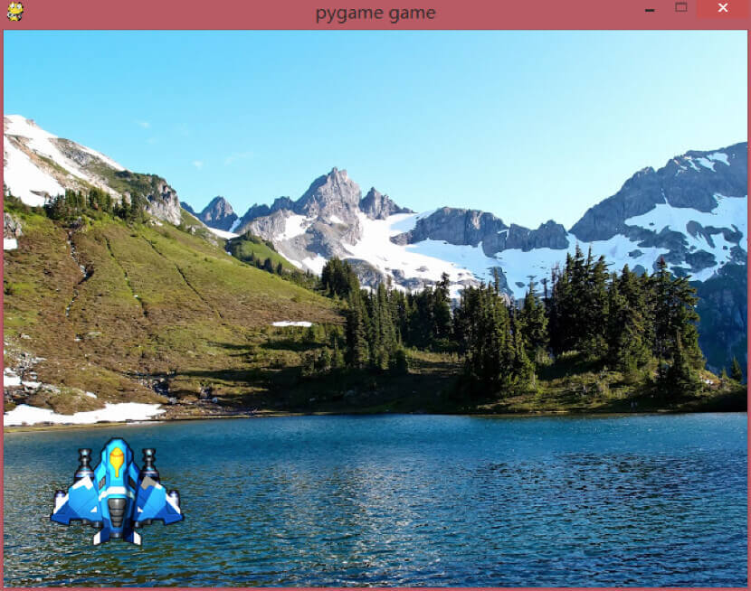
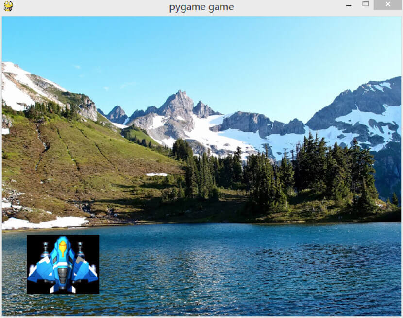
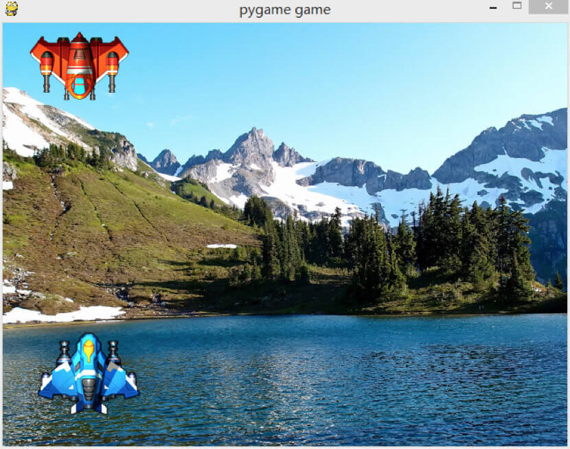
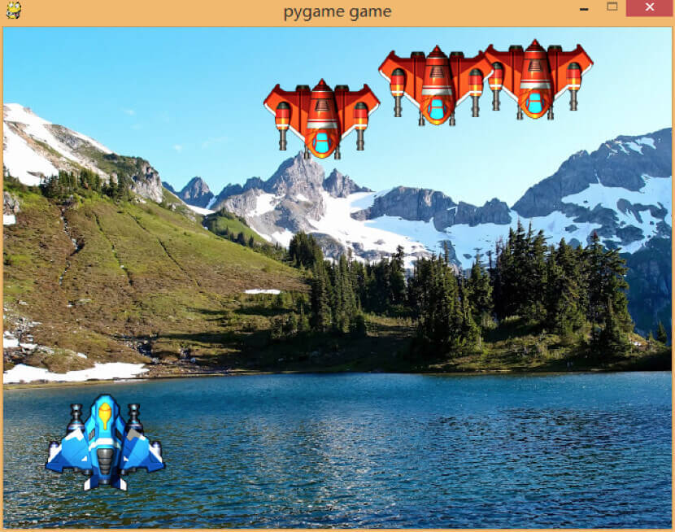

- 00 开篇词 跟我学，你也可以开发一款游戏！.md.html
- 复习课 带你梳理客户端开发的三个重点.md.html
- 第10讲 如何载入“飞机”和“敌人”？.md.html
- 第11讲 如何设置图像的前后遮挡？.md.html
- 第12讲 如何设置精灵的变形、放大和缩小？.md.html
- 第13讲 如何设置淡入淡出和碰撞检测？.md.html
- 第14讲 如何制作游戏资源包和保存机制？.md.html
- 第15讲 如何载入背景音乐和音效？.md.html
- 第16讲 如何在游戏中载入UI和菜单？.md.html
- 第17讲 如何用鼠标和键盘来操作游戏？.md.html
- 第18讲 如何判断客户端的网络连接？.md.html
- 第19讲 如何嵌入脚本语言？.md.html
- 第1讲 游戏开发需要了解哪些背景知识？.md.html
- 第20讲 脚本语言在游戏开发中有哪些应用？.md.html
- 第21讲 如何使用脚本语言编写周边工具？.md.html
- 第22讲 如何选择合适的开发语言？.md.html
- 第23讲 如何定制合适的开发协议？.md.html
- 第24讲 不可忽视的多线程及并发问题.md.html
- 第25讲 如何判断心跳包是否离线？.md.html
- 第26讲 如何用网关服务器进行负载均衡？.md.html
- 第27讲 如何制作游戏内容保存和缓存处理？.md.html
- 第28讲 热点剖析（一）：HTML5技术是如何取代Flash的？.md.html
- 第29讲 热点剖析（二）：如何选择一款HTML5引擎？.md.html
- 第2讲 2D游戏和3D游戏有什么区别？.md.html
- 第30讲 热点剖析（三）：试试看，你也可以编写一款HTML5小游戏！.md.html
- 第31讲 热点剖析（四）：安卓端和苹果端游戏开发有什么区别？.md.html
- 第32讲 热点剖析（五）：如何选择移动端的游戏引擎？.md.html
- 第33讲 热点剖析（六）：AR和人工智能在游戏领域有哪些应用？.md.html
- 第34讲 热点剖析（七）：谈谈微信小游戏的成功点.md.html
- 第35讲 热点剖析（八）：谈谈移动游戏的未来发展.md.html
- 第36讲 热点剖析（九）：谈谈独立开发者的未来发展.md.html
- 第3讲 游戏的发动机：游戏引擎.md.html
- 第4讲 底层绘图接口的妙用.md.html
- 第5讲 构建游戏场景的武器：地图编辑器.md.html
- 第6讲 从0开始整理开发流程.md.html
- 第7讲 如何建立一个Windows窗体？.md.html
- 第8讲 如何区分图形和图像？.md.html
- 第9讲 如何绘制游戏背景？.md.html
- 结束语 做游戏的过程就像是在雕琢一件艺术品.md.html
- 课后阅读 游戏开发工程师学习路径（上）.md.html
- 课后阅读 游戏开发工程师学习路径（下）.md.html
- 捐赠
第10讲 如何载入“飞机”和“敌人”？
上周，我向你解释了如何载入背景图片，以及如何使用坐标值的变换来移动背景图片。今天，我们要载入主角“飞机”和一些“敌人”。
导入随机函数
我们选择Python做为开发语言。在开始之前，需要用到一个随机函数，这个随机函数会在之后的代码中用到，具体用作什么，我会在后面揭晓。
首先，需要将随机函数导入Python的随机函数库random。代码可以这么写：
import random
然后，我们需要限定一个范围，来生成随机数，比如10到100的范围，代码可以这么写：
random.randrange(10, 100)
这个函数会接受三个参数：开始、结束、递增数字。
开始：开始随机的指定范围数值，包含在范围内。比如(10，100)，就包含10。
结束：开始随机的指定范围数值，不包含在范围内。比如(10，100)，不包含100，最多到99。
递增：指定递增数字。
如果不填写递增值，则按照开始、结束的值随机分配。比如 (10，100) ，那就会在10～99之间随机分配任何一个数字。
载入主角飞机
我们说完了随机函数的准备工作，就可以开始载入飞机了。
我们假设主角的飞机是从下往上飞，那它的飞机头应该是朝着电脑屏幕上方，而敌人的飞机是从上往下出现，所以它的飞机头应该朝着电脑屏幕的下方。主角的飞机暂时固定在屏幕下方，敌人的飞机则一直不停从上往下飞。
飞机的图片是我从共享的图片网站上抓取下来，让美术帮我处理和加工了一下。其实就是将飞机从一整块背景图片上抠除下来，让飞机看起来拥有飞机本身的轮廓，而不是一幅“方块”的飞机图片，然后将其图片保存成png的格式。
我们来看这里的代码。和载入背景一样，我们需要先定义主角飞机的图片名和敌人飞机的图片名。
plane = 'plane.png'
enemy = 'enemy.png'
使用png格式的原因是，png格式包含alpha通道。我们可以将图片抠成透明图，这样将图片贴在背景上面就看不到任何黑色块。
我们先尝试贴一下主角的飞机。
pln = pygame.image.load(plane).convert_alpha()
screen.blit(pln, (40, 350))
pygame.display.update()
我们定义一个叫pln的变量，载入plane图片，并且将alpha通道进行处理，然后在屏幕中绘制pln，最后我们使用update函数更新屏幕。
我们来看一下贴图的效果。

我们已经将这幅图片贴了上去。
在载入的过程中，如果我不使用convert_alpha函数会怎样呢？我们也来做一下实验。
pln = pygame.image.load(plane).convert()
screen.blit(pln, (40, 350))
pygame.display.update()
我将 convert_alpha 改成了convert，来看一下效果。

看到了那个大大的黑色色块没有？这就是我们没有处理alpha通道导致的结果，导致了一个大大的抠图色块出现在屏幕，所以要记住：
设计主角图的时候，要将图片抠下来；
在贴图的时候，需要进行alpha混合的处理，否则贴上去的图会存在抠图黑块。
载入敌人飞机
接下来，我们要从屏幕上方，贴一架敌人的飞机。
enm = pygame.image.load(enemy).convert_alpha()
screen.blit(enm, (30, 10))
pygame.display.update()
我们将两架飞机前后代码整合起来，再来看一下效果。

这样，我们将两架飞机都贴在了屏幕上了。看起来是不是有点像样了呢？
敌方肯定不止一个飞机，那我们就需要贴更多的敌方飞机。这里我们就需要用到最开始提到的随机函数了。为什么使用随机函数呢？因为我们需要让敌方飞机的排列看起来很随机（笑）。
我们现在要加载相同的敌方飞机图片，加载三次。也就是说，我们会在屏幕上方的一个固定区域范围贴上三次敌人的飞机。我们需要准备三个随机 (x，y) 位置的数字，并且赋值给 blit 函数。
ex1 = random.randrange(20, 600)
ey1 = random.randrange(10, 50)
ex2 = random.randrange(20, 600)
ey2 = random.randrange(10, 50)
ex3 = random.randrange(20, 600)
ey3 = random.randrange(10, 50)
screen.blit(enm, (ex1, ey1))
screen.blit(enm, (ex2, ey2))
screen.blit(enm, (ex3, ey3))
这样，我们就贴上了三幅飞机的图片。
我们再来看一下效果。

是不是看起来很有意思？但是这样并不能让飞机动起来，我们需要用到上一节里，移动背景图片的知识，来让敌人的飞机动起来。我们只需要将这三个y值在循环中设置成递增，就可以做到三架飞机的移动了。代码就像这样：
screen.blit(enm, (ex1, ey1))
screen.blit(enm, (ex2, ey2))
screen.blit(enm, (ex3, ey3))
ey1 +=1
ey2 +=1
ey3 +=1
这样我们就完成了敌人飞机不停往下飞的效果了。
后面的内容，也会像现在这样，代码很多，我带你再梳理一下逻辑。
首先，我们需要使用Python程序库的随机函数来制作随机数。
通过这个随机函数，来随机载入敌人飞机的位置。当然如果有游戏策划的话，游戏可能会由某种固定的起始点来刷出敌人飞机，这里我们只用到随机函数来刷敌人飞机。
如果想要做得更漂亮的话，我们可以将随机函数的值从屏幕最上方刷出来，这样看起来敌人就是从屏幕最上方飞下来的。比如我们可以设置y值为-10左右。
如果想要做得更精细的话，我们可以通过程序得到图片的长和宽。通过图片的长和宽来计算刷出飞机的位置，我们可以使用屏幕大小来减去飞机长宽的大小来计算，比如屏幕长是640，图片的长是8。那么，我们在设置 x 轴位置的时候，就应该最大只设置到640-8这样的位置。这样就不至于我们在编程的时候，只刷出半架飞机，或者根本就看不到飞机。
其次，我们在载入敌人飞机的时候，需要贴三幅图片。
当然，我们可以优化这一系列的代码，比如我们可以将一系列blit放在一个函数里面。上述的代码只是一个针对教学用的代码，为的是让你更直观、明了地能看明白如何载入三幅敌人飞机的图片。我们优化了代码后，可以直接使用一段代码和一系列数组就可以完成这个操作。
如果做了一幅alpha通道抠图的图片，我们在载入的时候，需要处理alpha通道的数据，让其图片达到“透明”的效果，而不是直接贴一幅有黑框的图片。
最后，事实上，我们要将这些内容更加完善，还有许多的工作要做。
这些工作我将在后续的内容中展开讲解。比如我们需要移动背景。这个我们上次已经说明了。在敌人飞机往下飞的过程中，我们需要考虑敌人飞机往下飞的速度，是不是要比屏幕移动的速度更快或者更慢，这样才能体现敌人飞机的等级高低，体现出游戏的难度是随着关卡的变化越来越难的。
我们将游戏背景的图片blit函数放在游戏循环的最开始，而载入飞机的代码则放在稍后的部分，那么如果我们将游戏背景的图片放到飞机之后载入会发生什么事情呢？如果你一直在练习我在文中提供的代码，你应该可以知道，这个时候飞机的图片都会不见了，只能看到游戏背景。这是因为Pygame是按照blit代码的顺序来载入图片的，这部分内容我在后面的内容中讲解。
我们可以将载入的图片资源放到一个资源包中，或者放在一个目录中，这样游戏的目录就不至于看起来乱七八糟，而是非常有序的。比如我们可以将所有和主角飞机相关的内容就放在飞机的目录下，和敌人相关的就放在敌人的目录下，背景和关卡就放在关卡的目录下，这样就看起来就整整齐齐。在编写代码的时候，从目录的名字不同，可以知道载入的是什么内容，比如：‘enemy/plane.png’。
小结
好了，这节内容差不多了。我主要和你讲了三个内容：
随机函数使用random.randrange来做，输入开始和结束值，就能随机出这一个范围的数字;
让飞机移动起来，需要将x或者y的值进行加减变化;
处理alpha混合半透明图片，需要使用conver_alpha函数。
最后，给你留一个小思考题吧。
while True:
......
ex1 = random.randrange(20, 600)
ey1 = random.randrange(10, 50)
screen.blit(enm, (ex1, ey1))
pygame.display.update()
如果我们把这段代码的ex1, ey1变量放在游戏循环中（本来在循环外面），并且将ex1, ey1填入到敌人飞机的blit函数中，会出现什么样的结果呢？
欢迎留言说出你的看法。我在下一节的挑战中等你！
© 2019 - 2023 Liangliang Lee. Powered by gin and hexo-theme-book.